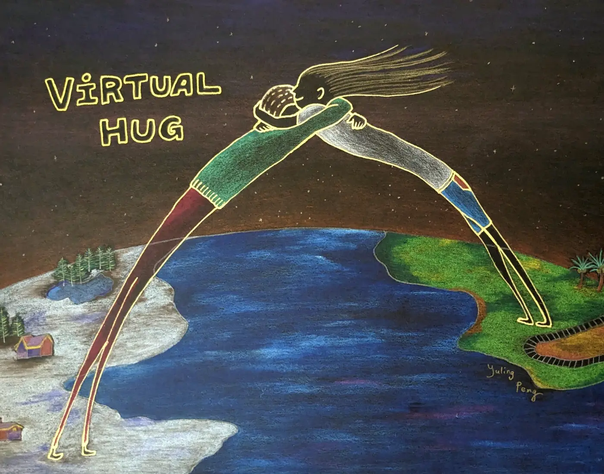

Virtual Hug. 2023
Details - Original Work
- Size: A4/ 21cm x 29.7cm (8.27x11.69")
- Mediums: colored pencils, drawing paper (black)
Story/Comment by the Artist
Sometimes I enjoy sitting quietly in my head, my own universe.
Sometimes I enjoy sitting quietly in my head, my own universe.